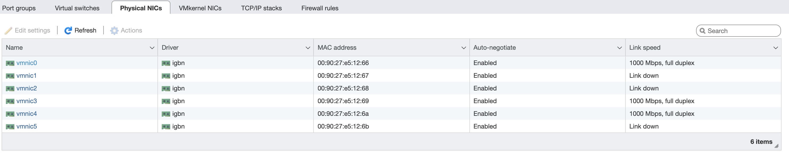

修改虚拟交换机 MTU 提高 esxi 虚拟机网络速度
最近发现我的局域网内网下的网速很慢，只有500M左右，达不到 1000M 的速度。我是通过 ipert3 进行测速的。
家里的网络是通过 esxi 下安装的 openwrt，ubuntu 等虚拟机控制的，通过 esxi 管理页面可以看到接口都运行在 1000M 全双工模式下，说明网线链接是没有问题的：

经过查询发现可以通过修改虚拟交换机的 mtu 值到 9000 来提高网络吞吐量从而加快网速。
修改 mtu
进入虚拟交换机栏：
点击每一个交换机进入设置界面，点击上面的 edit：
将 mtu 设置为 9000，并保存配置：
虚拟交换机里修改完后，进入 vmkernel NICs 栏：
点击 vmk0 进入设置界面，同样的点击 edit 修改其 mtu 为 9000 并保存：
以上就完成了整个虚拟环境 mtu 值的修改，再次通过 iperf3 测速，速率能达到 800M。
iperf3 使用
下面简单介绍使用 iperf3 测试内网传输速率。
首先在接收端以下指令运行在服务模式：
iperf3 -s然后再发送端执行以下指令启动测速：
iperf3 -c xxx.xxx.xxx.xxx -t 30以上指令中将地址替换为接收端 IP 地址，-t 参数可以设置测速时间，单位为秒。
参考链接
关于 ESXi 虚拟机间拷贝速度慢的问题
IPERF: How to test network Speed,Performance,Bandwidth
标签：无